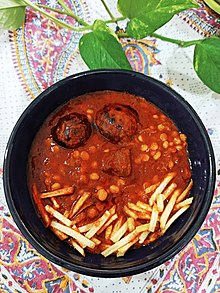

Gheymeh

Description
Gheymeh (Persian beef stew) is a yummy Iranian stew. It can be hot, depending on how many spices you add. There is very little prep, especially if you skip the potatoes, but this Persian beef stew takes several hours to cook, as any stew should.
Iraqi gheymeh (qeema) is made with finely diced meat and crushed split peas and is prepared on a large communal scale at the annual Āshūrā commemorations. It can also be served in weddings, funerals, parties, other holidays, etc.
Ingredients
- 1 ½ tablespoons oil
- 1 medium onion, chopped
- 12 ounces beef stew meat, cut into small pieces
- 1 cup dried split peas
- 2 dried Persian limes
- 1 ½ tablespoons tomato paste, or to taste
- 1 teaspoon salt
- 1 pinch curry powder, or to taste
- 1 pinch ground turmeric, or to taste
- 1 pinch ground black pepper to taste
- water as needed
- oil for frying
- 8 ounces potatoes, peeled
Steps
- Heat 1 1/2 tablespoons oil in a saucepan over medium heat. Add onion; cook and stir until softened and turned translucent, about 5 minutes. Add stew meat, split peas, limes, tomato paste, salt, curry powder, turmeric, and black pepper; add just enough water to fully cover mixture. Simmer, covered, until beef is cooked through and no longer pink in the center and split peas are tender, 2 to 3 hours.
- Just before stew is ready, heat 2 inches oil in a deep saucepan over medium heat to 300 degrees F (150 degrees C). Slice potatoes into thin pieces, 2-inches long. Lower potatoes carefully into the hot oil in batches. Fry until soft, 4 to 5 minutes per batch. Transfer to a paper-towel-lined plate to drain. Repeat with remaining potatoes. Line a separate plate with paper towels; set aside.
- Increase heat until oil reaches 400 degrees F (200 degrees C). Lower potatoes carefully into the hot oil in batches. Fry until golden and crisp, 4 to 5 minutes per batch. Transfer to the separate paper-towel-lined plate to drain. Repeat with remaining potatoes.
- Top stew servings with fried potatoes.